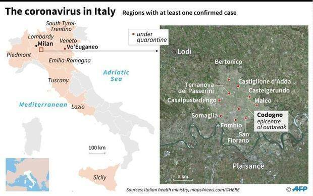
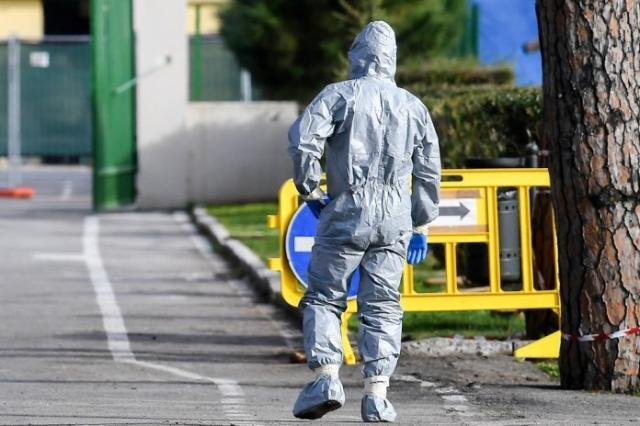
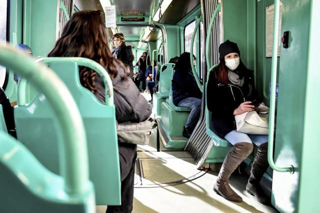

意大利疫情日记①下：政客投机钻营 联盟党煽动排外
原文链接 备份链接 体坛周报全媒体驻意大利记者 王勤伯 意大利新冠疫情突然爆发，不少同事、朋友和读者都对我表达了关心，这里就借体坛加APP的一个角落，和大家聊聊我正在经历的意大利疫情。 （3） 必须承认，疫情的发生始终有其偶然性，尤其是这 …
体坛周报全媒体驻意大利记者 王勤伯
（1）
在第一篇疫情日记里和大家聊到，我所在的托斯卡纳大区仍然是0确诊。但今天这个数据已经发生了改变：2例。
这两人的情况是：
-第一个确诊的是佛罗伦萨一位63岁的商人，他年初去过新加坡。但由于他1月6日就回到了意大利，医生倾向于认为他是回到意大利才感染的。他是否传染给了身边人，这条线目前还在调查中。
-第二个确诊的是佛罗伦萨西北边皮斯托亚省的一位49岁IT技术人员，他不久前在北边隆巴底疫区科多尼奥镇住了3天，一听说那里发生了疫情，赶紧进入自我隔离状态，本周一开始发烧，救护车把他接走，经检查是阳性。比较麻烦的是，他回家已经有几天，他的2个小孩上周正常上学，当地市长很担心学校发生集体感染。现在正在紧急排查中。
意大利全国，到2月26日北京时间零点，意大利全国确诊人数288例，死亡10例，其中6个死者年龄超过80岁，2个75-79岁，另外2个1个62岁，1个68岁，所有死者都有慢性疾病。

由于意大利还有大约1800例核酸测试未出结果，上述数值在本文发表时可能发生较大变化。
（2）
从上面一系列数据可以看出，新冠肺炎造成的死亡案例更多发生在高龄和慢性病人群，被报道的重症人数不多，意大利很快就有人出来降温。
在疫情最严重的隆巴底大区（1号病人是重症，怀孕8个月的妻子阳性但无症状，他们居住的科多尼奥镇，半数以上确诊案例都和科多尼奥有关），大区主席丰塔纳发表公开讲话：
“我们需要降降温，形势毫无疑问很困难，但并不是那么危险的：病毒的扩散很有侵略性，但造成的后果远远不是那么大。只比普通的流感更严重一点，专家们都这样说。”
当然不是所有意大利专家都这样说，更不存在“专家们”这样说。专家们普遍呼吁民众冷静，并不等于绝大多数专家宣扬“只比普通流感更严重一点”（个别特例是存在的，例如米兰的一位女专家，但因为引用数据错误明显，很快就被反驳了）。
意大利著名的病毒学家布里奥尼说，80-90%的感染者轻症可自愈是事实，但问题是10-20%转入重症的案例很可怕。
这是个简单的算术问题，如果发生大面积感染，例如几十万甚至上百万人染病，将产生多少重症患者？
新冠肺炎比普通流感更危险是事实，到底危险到什么程度呢？
意大利不少媒体做了比较。由于很多流感患者并没有去看医生，而是自愈，所以意大利每年的流感感染人数是卫生部门根据就医人数、相关药物销量等数据估算的，目前大约是每年800万左右。
流感每年在意大利直接造成的死亡在300-400人，间接造成的死亡在4000-10000人，把直接间接死亡人数统计进去，死亡率是0.12%左右。新冠肺炎的死亡率在武汉和武汉之外差异很大，如果以2.5%来计算，也是流感死亡率的20倍。
疫情当前，把新冠比作流感不仅极度愚蠢，而且对于防疫工作可能产生重大伤害，为什么丰塔纳这样重要的官员突然跑出来犯傻呢？
因为隆巴底大区这次的乌龙太大了。

上一篇日记我们介绍过，意大利的各个大区政府在卫生、教育等公共事务里扮演着重要的角色。这次新冠疫情当前，意大利卫生部有全国性的部署，但具体到地方的工作，需要大区去做。
偏偏科多尼奥镇成了全意大利、全欧洲最大的疫情爆发点，科多尼奥所在的隆巴底大区，目前确诊人数超过200个，占据意大利总确诊人数的2/3强。同时，目前意大利输出到欧洲其他国家的病例，例如奥地利、西班牙，都能和隆巴底大区找出关系。
在意大利，防疫处理不当，从医生到官员，都有可能坐牢。例如出现第一例死者的威内托大区，帕多瓦检察院就开启了对医院的调查，希望确认有无防疫程序违规之处，如果有，就会追查源头。
那么造成众多感染的科多尼奥医院呢？暂时还没看到当地检察院的动作，但几乎所有了解新冠的人，都会惊讶“1号病人”、38岁的业余运动员如何在发烧的5天时间里反反复复往返于自家和急诊之间，这个处理是否违反防疫规范，非常值得探讨。意大利总理孔特就直接表示，在科多尼奥发生的聚集感染，和当地医院没有完好遵照防疫规范有关。

丰塔纳
这句话立即引发了丰塔纳的叫骂，他说孔特无知无畏，坚持说隆巴底大区（有意混淆科多尼奥医院本身的问题）完全遵照了政府要求的程序。又说目前的情况都是孔特无能造成的。
丰塔纳所在的“联盟党”领袖萨尔维尼赶紧利用孔特批评科多尼奥医院一事来煽动意大利医护人员对现政府的反感，要求孔特放过“所有意大利医生”，再度重复“孔特无能”的论点。
现在意大利的情况是，除了隆巴底大区的大爆点和威内托大区的小爆点，其余大区发生的案例，暂时都没有查出聚集感染的情况，没有形成新的疫情爆点。
如果未来这种情况持续下去，科多尼奥镇就可能成为重要的舆论聚焦点，媒体肯定会顺藤摸瓜翻个底朝天。这样，联盟党成员丰塔纳可能成为众矢之的。
所以，丰塔纳一边需要安抚民意，一边对孔特以攻为守。25日孔特和意大利各大区主席进行疫情电话会议，丰塔纳中途掐掉连线，甩下一句狠话，“我们在应对紧急状态，你只知道去电视上夸夸其谈。”
把孔特晾到一边，丰塔纳立即就去发表了“新冠流感论”重要讲话，告诉隆巴底人民，情况不那么紧急。
（3）
现在我们聊一聊意大利的封城是怎么一回事，以科多尼奥为例。
很显然，封城这种事情，绝大多数人是一辈子也没有想象过的。理论上说，由于军警封堵的只是交通要道，如果有人想偷跑出去，可以趁黑夜在田野里抄小路步行离开。这种案例目前还没有被发现，意大利有专门针对防疫的法律，在封城状态下，违法规定逃离疫区的人，可能面临3个月牢狱。
当地居民在电视上看到意大利电视关于本城的报道，都觉得有点好笑。这种1万到1.5万人规模的意大利小镇，平时的生活是格外平静的，尤其到了夜间，街上永远空空荡荡，更难有大批外地人跑来。

现在是记者们一批批赶来，电视台甚至开来了转播车，报道封城状态中的科多尼奥如何冷清，反而让科多尼奥多了一份特别的热闹。
科多尼奥的封城并不是以小区为单位，而是全城的封锁，关键路口有军队或警察把守。
尽管多数人都选择呆在家里，但并没有规定居民不能外出，所以同样会有人出来散步、跑步、遛狗。只是平时意大利式的见面拥抱亲吻在街边聊上半天不走的习惯没了。同时科多尼奥周边很多乡野小径，不少人选择了去这样的空旷处活动。
学校、酒吧、餐馆关闭了。药房和超市则有少量获准开门。药房采取平时夜间售卖的模式，只开一个小窗。超市则是采取限流进入的办法，排队的人也基本做到了保持彼此距离。
（4）
意大利卫生部直属高等研究院的研究者指出，病毒可能1月份就已经在意大利传播了，同时，比较“幸运”的是，传播较多集中在面积不太广大的范围。同时，意大利的新冠死亡率不会太低，因为意大利是个老龄社会。
意大利是全世界著名的长寿国，很多老人不和子女生活在一起。所以针对老人的诈骗，是意大利骗子们的核心学问。
他们会以各种理由骗取老人的信任，让他们打开家门，然后娴熟地找到意大利老人习惯存在贵重物品或现金的地方，实施盗窃。
新冠疫情爆发刚刚爆发，骗子们立即开展行动，把自己打扮成医护人员，说是当地卫生部门来给居民免费查核酸。
隆巴底大区多个城市都有居民报警，说有此类骗子试图上门行窃，所以意大利卫生部门在宣传防疫要领，意大利警方紧急通知居民在家注意防火防盗防试纸。
但还是有人被骗了，博洛尼亚有个81岁的老奶奶，遇到“当地卫生部门”上门安排防疫，进门以后，骗子告诉老奶奶，钞票最脏需要消毒，让她把家里的钱都拿出来消毒。骗子乘机顺走500欧元。
原文链接 备份链接 体坛周报全媒体驻意大利记者 王勤伯 意大利新冠疫情突然爆发，不少同事、朋友和读者都对我表达了关心，这里就借体坛加APP的一个角落，和大家聊聊我正在经历的意大利疫情。 （3） 必须承认，疫情的发生始终有其偶然性，尤其是这 …
原文链接 备份链接 图片来源：安莎通讯社 记者：潘金花 “ 意大利正出现德法已有的本地人传人感染群。随着伊朗病例的大幅增加，中东疫情也在逐步扩散。世卫组织担心新冠病毒在卫生系统薄弱的国家蔓延。 ” 随着新冠肺炎疫情在全球蔓延，本周，疫情正 …
原文链接 备份链接 经济观察网 记者 欧阳晓红 几乎是一夜之间，新冠病毒袭击了意大利北部伦巴第和威尼托地区小城镇。 确诊152例，死亡4例（最新增的一例是84岁老人）。这是截至当地时间2月24日09时的意大利疫情数据。而米兰以东的伦巴第地 …
原文链接 备份链接 体坛周报全媒体驻意大利记者 王勤伯 意大利新冠疫情突然爆发，不少同事、朋友和读者都对我表达了关心，这里就借体坛加APP的一个角落，和大家聊聊我正在经历的意大利疫情。 （1） 先聊一下对意大利卫生防疫系统和本次应对新冠的 …
原文链接 备份链接 由于确诊病例迅速攀升，意大利成为亚洲国家之外疫情最严重的国家。为了控制病毒的扩散，意大利政府从2月22日起在11个市镇采取了“封城”举措。在被封锁地区，只有持特别通行证者才能出入 2月23日，意大利米兰市中心的大教堂广 …